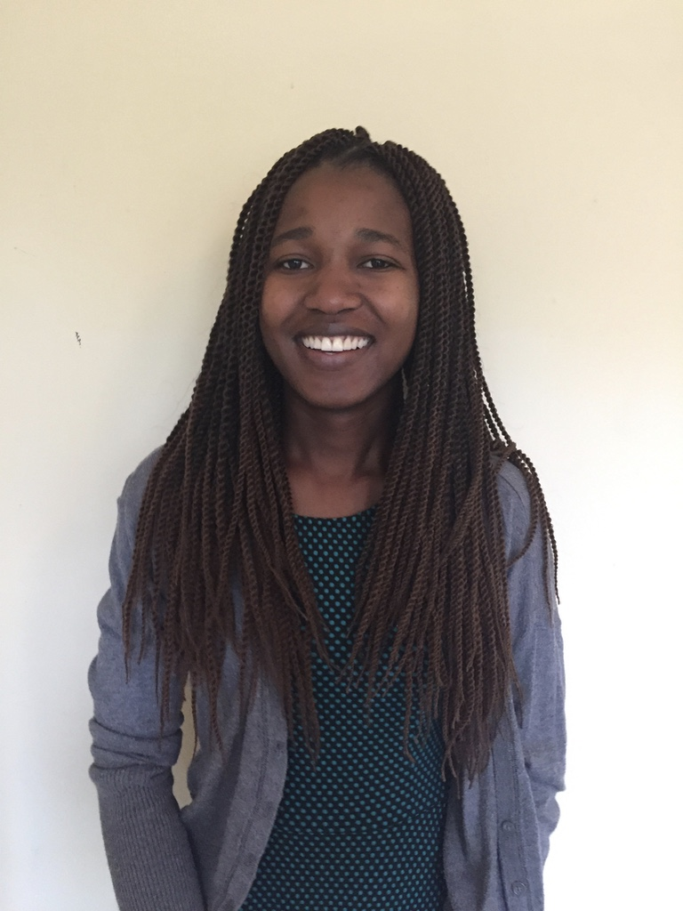

My name is Lilian Ngweta. I just completed my junior year at Arizona State university and I will be a senior next semester. I am a Software Engineering major which is under the School of Computing, Informatics, and Decision Systems Engineering department. I expect to graduate in May 2018. This summer, I am a DREU Computer Science Research intern at Northeastern University in Boston, Massachusetts. I am super excited and thankful for this opportunity because I believe am going to learn a lot. I love to travel and through this opportunity, I got to come to the east coast for the first time. I am excited about the project and my whole experience here on the east coast this summer!
My Email address: lilian.ngweta@asu.edu
My Mentor is Professor Andrea Parker. She is a profesor at Northeastern University. Below is her description on who she is and what she does.
I am an Assistant Professor at Northeastern University, jointly appointed in the College of Computer & Information Science and the Bouve College of Health Sciences. I am the founder and director of the Wellness Technology Research Group and I am part of the core faculty shaping the Personal Health Informatics Ph.D. program.
In 2012 I completed a postdoctoral fellowship in the Everyday Computing Lab at the Georgia Institute of Technology, where I worked with Dr. Elizabeth Mynatt and collaborated with Dr. Veda Johnson at Emory University School of Medicine. I hold a Ph.D. in Human-Centered Computing from the Georgia Institute of Technology and a B.S. in Computer Science from Northeastern University.
My research contributes to the fields of Human-Computer Interaction (HCI), Computer Supported Cooperative Work (CSCW), and Health Informatics. I design and evaluate the impact of software tools that help people manage their health and wellness. My research specifically examines ethnic and economic health disparities and the social context of health management. I take an ecological approach to technology design, whereby I conduct in-depth fieldwork to examine the intrapersonal, social, cultural, and environmental factors that influence a person's ability and desire to make healthy decisions--and how technology can support wellness in this context.
She is Awesome!
Professor Andrea's Website: http://www.ccs.neu.edu/home/andrea/
I am working on two research projects this summer, the Storytelling Technology Project and the Experiential Learning Games Project. Below is the description of each project.
For many generations, storytelling has been used as a medium for interaction and resolidifying family values and belief. This project is exploring how storytelling technology driven by health sensor can be used for as a space for family bonding and solidifying family values in health and physical activity. While prior work in technology based physical activity intervention has been focused on visualizing and gamifying health sensor data, this work explores how child’s attitude and self-efficacy can be supported through reflection on concrete experiences.
This project will advance research around using health-monitoring tools, such as sensor-based physical activity trackers, to support healthy behaviors for children in low-income families. In comparison to the general population, low-income families face disproportionate barriers to wellness, such as persistent social stressors and limited environmental support for behavior change. As such, a key technical challenge is designing systems that help families learn how to overcome these barriers to physical activity. We work closely with families to target the application more directly at their needs, while adding features to support “experiential learning”—the idea that reflecting on concrete past experiences can help people develop insights that guide their future behavior. This project received 3-year grant from the National Science Foundation.
Final report will be uploaded towards the end of my internship
I arrived in Boston from Arizona on the 15th, one week before officially starting my internship. I came early so I could get used to the environment before starting my internship because I had never been to the east coast before. I began my internship on the 22nd of May. I am working in the Wellness Technology Lab here at Northeastern University. I got to meet all students working in the lab on my first day and we had a group lunch. I also completed the NIH Training and got my completion certificate on my first day. The NIH training was required because one of the projects I am working on involves working with human research participants. The NIH training is about protecting human research participants.
I spent the first week learning about the projects that were going on in the lab and got an opportunity to pick the ones I was interested in working on. I am working on the Storytelling Technology Project where we are developing an android mobile application. The goal of the app is to promote families to be physically active together through story telling. I spent the first week reading about the project and understanding the requirements. We are first developing the app server and we are using python, Django and Django REST Framework for the back end. I spent the first week familiarizing myself with these technologies before getting started on the actual development. I also attended the app design meeting with the Project Lead who is a PhD student and one other undergraduate student from Northeastern University.
Apart from the Storytelling app project, I am also working on the Experiential Learning Games project. This is a Human-Computer Interaction project and I work on preparing research materials for our participants and attend research participant interview sessions. On the first week, I created 5 gmail accounts and 3 Fitbit and Kid Power accounts for our participants. I also got an opportunity to attend an interview session at the participant’s house. It was a great experience because I got an opportunity to leave the lab and go to a different town for the interview.
I am learning a lot through these projects and I am so excited to see what we will accomplish by the end of the summer!
The Monday of week two was Memorial day and therefore we did not go to work. On Tuesday I finished up the beginner Django tutorials and attended an interview at a participant’s home for the Experiential Learning Games project. On Wednesday we had the Experiential Learning Games project meeting where we discussed our progress and tasks that need to be completed. My task was to set up 5 more fitbit and Kid Power accounts. On Thursday we had the Storytelling Technology Project meeting to discuss the progress and the next steps for the project. My task was to create an API for the family activity. I started working on creating the API on Friday, but I ran into a problem with mysql. A while back I had downgraded my mysql server from 5.7 to 5.6. When doing the downgrade, I forgot to save the temporary that was provided after finishing the installation and therefore I couldn’t log into the server to make the connection with the database that we are using for the app. The easier solution for me was to uninstall the mysql and reinstall again, and this time I remembered to save the temporary password given and therefore I was able to connect and everything went back to normal. I finished week 2 with an invitation to go to a Kenyan home for an African home cooked meal. It was awesome!
I started week 3 with a group meeting for the Storytelling Technology Project. At our meeting we discussed our progress and everyone shared the obstacles they were facing. We also discussed what each one of us would be able to deliver by the end of the week. I was working on developing the family activity API and the problem I was facing was that I had trouble with understanding how I could use the factory design pattern and serialization to get the API I wanted. The goal was to deliver a completed API by Friday. I continued working on developing the family activity API on Tuesday. On Wednesday, I went to interview a research participant at her house with a PhD student for the Experiential Learning Games project. I finished working on the family activity API on Thursday, but I got into so many conflicts when pushing to the development branch on GitHub that I lost all my work when trying to resolve them because I incorrectly used the git reset and git checkout commands. On Friday I redid all the work that was lost due to GitHub issues and I was able to finish everything by the end of the day. I met my goal of finishing creating the family activity API by the end of the week and pushed everything to the GitHub repository.
I started week 4 with a meeting for the Storytelling Technology Project. In this meeting everybody gave their updates on what they had been working in the previous week and defined the goals for the week. My goal for week four was to write code for pulling the physical activity data from the wellness dev server using authentication in android. I spent my Tuesday researching how I would accomplish my goal. On Wednesday we had another project meeting and I used this time to ask the project leader some clarification questions regarding my task for the week. On Thursday I attended an interview session at a research participant’s home for the Experiential Learning Games project. When I came back from the interview session, I started writing code for pulling data from a secured URL. I successfully finished my task of pulling data in JSON format from secured URLs on Friday and pushed my code to GitHub
Upcoming
Upcoming
Upcoming
Upcoming
Upcoming
Upcoming